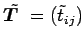

Inhalt Index DeskTop Bronstein

 Lineare Algebra Tensoren Tensoren mit speziellen Eigenschaften Invariante Tensoren
Lineare Algebra Tensoren Tensoren mit speziellen Eigenschaften Invariante Tensoren


Von den invarianten Tensoren muß man die Tensorinvarianten unterscheiden. Letztere sind Funktionen von Tensorkomponenten, deren Form und deren Wert bei Drehung des Koordinatensystems gleichbleiben.
| Beispiel A |
|
Für die Spur des Tensors T=(tij), der durch Drehung in  übergeht, gilt: Die Spur des Tensors T ist gleich der Summe der Eigenwerte (vgl. Spur der Matrix). |
| Beispiel B | ||
|
Für die Determinante des Tensors T =(tij) gilt:
Die Determinante des Tensors ist gleich dem Produkt der Eigenwerte. |